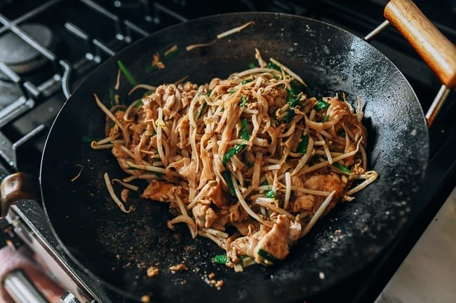

Pad Thai

Mitch's Authentic Pad Thai Recipe
This is the type of meal you want to be eating when it's a chilly winter evening and you've just snuggled up with a blanket by the fire.
This is another paragraph describing the recipe.
Ingredients
- 1 lbs Beef Chuck
- 3 Large Yukon Gold Potatoes
- 1 Cup Frozen Peas
- 3 Large Carrots
- 2 Cups Beef Stock
- Parsley
Steps
- Brown the meat over medium-high heat.
- Add half the celery, carrots, and onions to your dutch oven. Cook until onion is translucent.
- Deglaze with half a bottle of red wine. Reduce until thick.
- Combine the remaining ingredients. Cook partially covered in oven at 250 degrees farenheit until meat is tender (~3 hours)